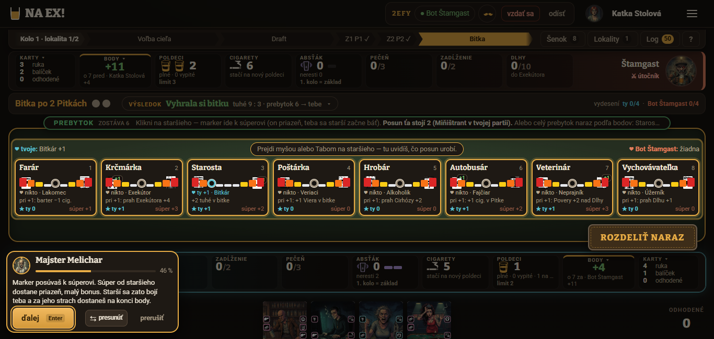
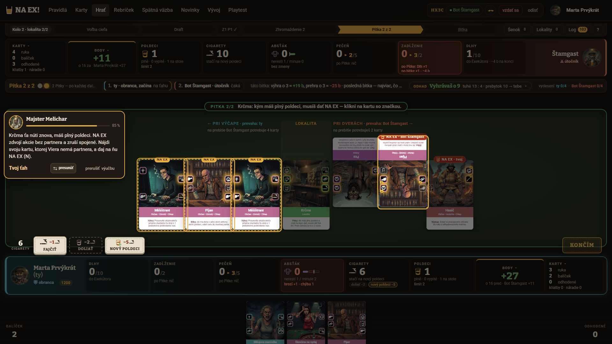
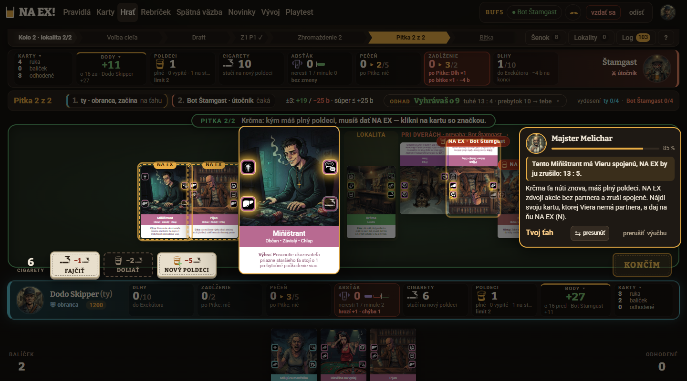
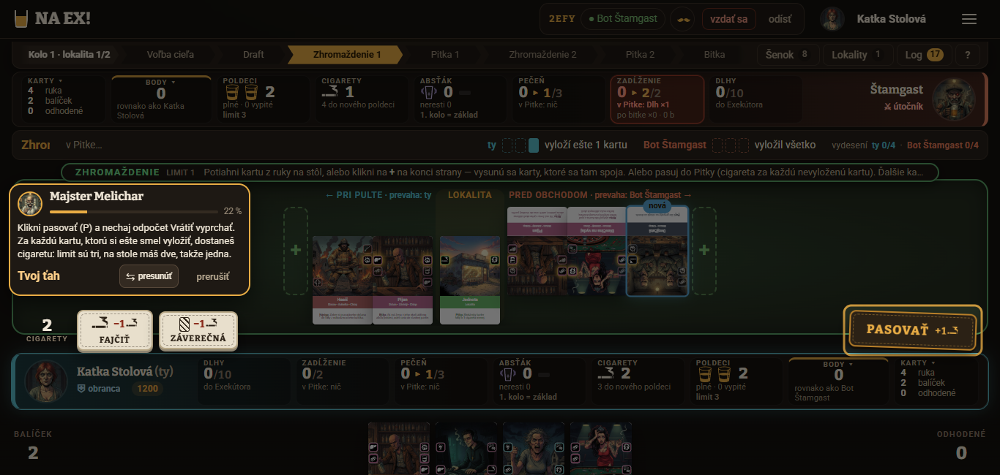
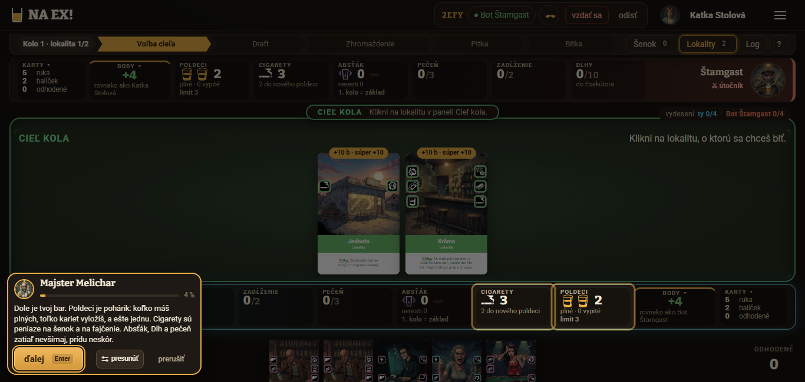
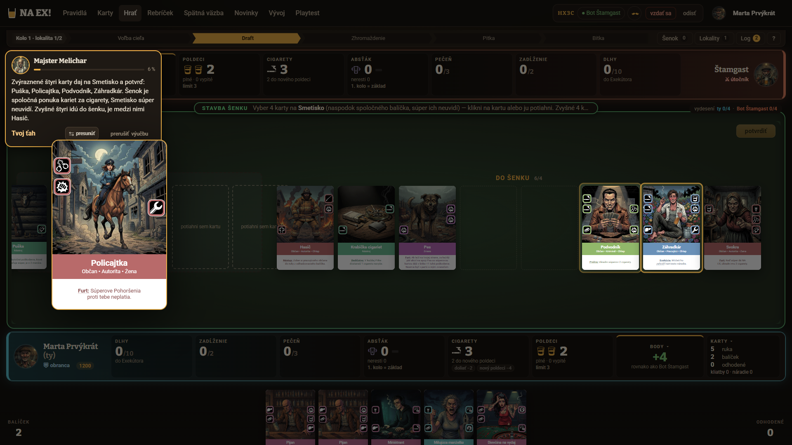

Playtest výučby Prvá hra, kolo 3 · 20261024-064125
1. Verdikt
Áno po opravách, ale cieľ 3. kola nie je splnený: splnený je jeden z troch (odmietnutia servera), priemer V1–V10 je 6,2 (cieľ 7) a test pochopenia 17/24 úplne správnych (cieľ 18). Test sa oproti 2. kolu zlepšil o 3 odpovede (14 → 17; starší 0/3 → 2/3, cieľ hry 0/3 → 2/3) a krok 31 z 2. kola (rozhodnutie „Miňištrant“, dnes krok 30; 9–12 akcií a 75–100 s) je preč: dnes ho nováčikovia zvládli za 2 akcie a 14–19 s. Priemer známok sa však nehýbe (6,3 → 6,2; Marta +0,3, Dodo +0,3, Katka −0,9) a najnižšie sú kritériá, ktoré tvorí rozhranie, nie scenár: čitateľnosť stola 4,7, bublina 5,7, pochopenie 5,7 a „prečo“ 5,7. Všetci traja dokončili všetkých 85 krokov za 8,5 až 11,4 minúty (Katka neklikla posledné „ďalej“).
- Rozhranie výučby (3 z 3): bublina stále zakrýva bar hráča a horný pruh s pokynom (to isté, čo v 2. kole, len na iných miestach), veľká lupa karty po ťahu zostane visieť a zakryje sloty i tlačidlá „potvrdiť“ a „NA EX!“, v kroku 38 svieti panel BODY namiesto stupnice starších a výučba po jednom ťahu preskočí 3–5 krokov naraz (nik nestihne prečítať, čo hra spravila za neho).
- Pojmy a ikony stále prídu skôr než ich vysvetlenie: ikony na hranách kariet (Marta: „najväčšia diera“), Absťák, Dlh, Pohoršenie, sekera, priazeň. Krok 84 navyše zavádza Dedičstvo, Záverečnú a patronát len odkazom „nájdeš v Pravidlách“ (3 z 3: „tieto slová som nikdy nezažila“). Sebahodnotenie nováčikov kleslo (45 / 55 / 55–60 % oproti 55 / 60 / 65 %), hoci test vyšiel lepšie.
- Plán do prvej partie sa neujal (otázka 8 má 0/3 už druhé kolo) a starší sú stále „protirečiví“: nik z odpovede na „čo by som urobil inak“ neodkázal na plán z kroku 84 a smer markera („posúvaš k súperovi, ale starší sa bojí teba“) označili za paradox všetci traja, hoci kontrolné otázky 43 a 44 zodpovedali správne. Rozhodnutie „oplatí sa odpovedať kartou?“ (krok 67) zlyhalo 3/3 napoprvé ako v 2. kole.
2. Porovnanie s 1. a 2. kolom a splnenie cieľa
1. kolo: playtest/vyucba-20261023-161148 (70 krokov), 2. kolo: playtest/vyucba-20261023-183417 (83 krokov, kód e482a2d), 3. kolo: 85 krokov. Rovnaká trojica postáv, ale čísla nováčikov sa v 3. kole zmenili (1 Marta, 2 Dodo, 3 Katka); porovnávam podľa mien. Test sa hodnotil podľa docs/PRAVIDLA.md rovnakým meradlom ako v 1. a 2. kole, ktoré v 2. kole opísal spisovateľ: „správne“ = odpoveď bez podstatnej chyby a bez medzery, ktorú v predošlom kole označili za chýbajúcu (pri cieli hry okamžitá výhra vydesením polovice starších aj mínus za Dlhy a Cirhózu; pri starších smer markera a úroveň strachu; pri Zhromaždení limit plné poldeci + 1; pri priebehu kola poradie fáz, prebytok a počet Pitiek).
6,2 z 10
Cieľ 1: priemer V1–V10 ≥ 7. Chýba 0,8 (1. kolo 4,7, 2. kolo 6,3). Dodo 6,7 (+0,3), Marta 5,7 (+0,3), Katka 6,2 (−0,9; v 2. kole 7,1). Ani jeden nováčik cieľ sám nesplnil.
17 z 24
Cieľ 2: test ≥ 18/24 úplne správne (1. kolo 8/24, 2. kolo 14/24). Katka 7/8, Dodo 7/8, Marta 3/8; nik „zle“ ani „nevie“. Chýba jedna odpoveď — pozor, je to na hrane: pri prísnejšom čítaní tých dvoch hraničných odpovedí (Dodo otázka 2, Katka otázka 6) je to 15, pri miernejšom čítaní Marty (otázky 1, 2, 3) 20. Otázka 8 má 0/3 po tretíkrát.
0 / 2 / 0
Cieľ 3: najviac 1 odmietnutie servera na krok. Marta 0, Katka 0, Dodo 2, každé na inom kroku (krok 4
k0 a krok 40 k27) a obe zámerné: klikol na Krčmu namiesto Jednoty a na Krčmárku namiesto Farára. Najviac 1 na krok. (1. kolo 7 / 6 / 2, až 6× na kroku 17; 2. kolo 0 / 2 / 0 na jednom kroku.)Čo toto číslo neukazuje: „1 odmietnutie na krok“ nemeria zaseknutie, lebo zlé voľby ošetruje klient (náhľad, rada Melichara). Zaseknutie meria dĺžka kroku: najdlhší krok je dnes krok 5 (stavba Smetiska: Marta 28 s, Dodo 27 s, Katka 14 s, 5–6 akcií, to je 4 karty + potvrdiť), v 2. kole krok 31 so 75–100 s a 9–12 akciami. Ťahanie kariet na „+“, ktoré v 2. kole nefungovalo (Dodo 0 zo 4), dnes zabralo napoprvé (Dodo 8 zo 8; Marta 12 a Katka 8 ťahaní bez hláseného zlyhania).
Známky V1–V10 po nováčikoch: kolo 1 → kolo 2 → kolo 3
| Kritérium | Katka | Dodo | Marta | Priemer 1. kolo | Priemer 2. kolo | Priemer 3. kolo | Zmena 2 → 3 |
|---|---|---|---|---|---|---|---|
| V1 Pochopenie hry | 4 → 7 → 6 | 4 → 6 → 6 | 4 → 6 → 5 | 4,0 | 6,3 | 5,7 | −0,7 |
| V2 Jasnosť pokynov | 5 → 8 → 6 | 4 → 7 → 7 | 6 → 5 → 6 | 5,0 | 6,7 | 6,3 | −0,3 |
| V3 Vysvetlenie „prečo“ | 3 → 8 → 6 | 5 → 7 → 6 | 5 → 5 → 5 | 4,3 | 6,7 | 5,7 | −1,0 |
| V4 Bublina Melichara | 4 → 6 → 5 | 3 → 6 → 6 | 3 → 4 → 6 | 3,3 | 5,3 | 5,7 | +0,3 |
| V5 Zvýraznenie | 5 → 7 → 6 | 6 → 6 → 7 | 7 → 6 → 7 | 6,0 | 6,3 | 6,7 | +0,3 |
| V6 Ovládanie | 4 → 7 → 7 | 4 → 6 → 8 | 5 → 6 → 6 | 4,3 | 6,3 | 7,0 | +0,7 |
| V7 Tempo a dĺžka | 5 → 7 → 6 | 4 → 6 → 7 | 5 → 5 → 6 | 4,7 | 6,0 | 6,3 | +0,3 |
| V8 Tón a postava Melichara | 6 → 7 → 7 | 7 → 8 → 8 | 7 → 8 → 7 | 6,7 | 7,7 | 7,3 | −0,3 |
| V9 Čitateľnosť stola | 3 → 6 → 6 | 4 → 5 → 5 | 4 → 3 → 3 | 3,7 | 4,7 | 4,7 | 0,0 |
| V10 Chuť hrať | 5 → 8 → 7 | 5 → 7 → 7 | 6 → 6 → 6 | 5,3 | 7,0 | 6,7 | −0,3 |
| Priemer V1–V10 | 4,4 → 7,1 → 6,2 | 4,6 → 6,4 → 6,7 | 5,2 → 5,4 → 5,7 | 4,7 | 6,3 | 6,2 | −0,1 |
Najviac vzrástli V6 ovládanie (+0,7; vďaka ťahaniu a skratkám, Dodo 8) a V4 bublina, V5 zvýraznenie, V7 tempo (po +0,3); najviac klesli V3 „prečo“ (−1,0) a V1 pochopenie (−0,7). Pokles V1 a V3 ťahá Katka (8 → 6 pri „prečo“) a Marta (V1 6 → 5): obe teraz presnejšie vedia, čo nevedia (Absťák, patronát, Dedičstvo, Záverečná, Smetisko, Pohoršenie), a krok 84 im tie slová ukázal bez vysvetlenia. V9 čitateľnosť stola zostáva najnižšia (4,7; Marta 3 pri 1920×1080) a nezmenila sa.
Test pochopenia po otázkach: kolo 1 → kolo 2 → kolo 3
S = úplne správne, Č = čiastočne; poradie Katka, Dodo, Marta. Dôvody sú v sekcii 5.
| Otázka | 1. kolo | 2. kolo | 3. kolo | Zmena 2 → 3 |
|---|---|---|---|---|
| 1 Cieľ hry | S Č Č (1/3) | Č Č Č (0/3) | S S Č (2/3) | +2 |
| 2 Priebeh kola | S Č Č (1/3) | S S Č (2/3) | S S Č (2/3) | 0 |
| 3 Zhromaždenie | Č Č Č (0/3) | S S S (3/3) | S S Č (2/3) | −1 |
| 4 Pitka a NA EX | Č S Č (1/3) | S S S (3/3) | S S S (3/3) | 0 |
| 5 Bitka | Č S S (2/3) | S S S (3/3) | S S S (3/3) | 0 |
| 6 Starší | Č Č Č (0/3) | Č Č Č (0/3) | S S Č (2/3) | +2 |
| 7 Poldeci a cigarety | S S S (3/3) | S S S (3/3) | S S S (3/3) | 0 |
| 8 Čo by urobil inak | Č Č Č (0/3) | Č Č Č (0/3) | Č Č Č (0/3) | 0 |
| Spolu | 8/24 | 14/24 | 17/24 | +3 |
Najväčší posun: starší (0 → 2; krok 38–39 rozdelený a nováčik klikne Farára sám trikrát), cieľ hry (0 → 2; veta o okamžitej výhre je od kroku 1, dnes ju uviedli všetci traja). Zhromaždenie kleslo z 3/3 na 2/3 a priebeh kola ostal 2/3, oboje kvôli Marte: nevie presný limit („podľa poldecí, ale presne neviem“) a poradie Smetiska a nákupu. Otázka 8 zostáva 0/3.
Ostatné ukazovatele
| Ukazovateľ | 1. kolo | 2. kolo | 3. kolo |
|---|---|---|---|
| Kroky scenára | 70 | 83 | 85 (39 z nich sú ťahy hry alebo Štamgasta, 22 bez textu) |
| Dĺžka (Katka / Dodo / Marta) | 16,7 / 11,8 / 11,6 min | 11,1 / 12,5 / 12,8 min | 8,5 / 10,8 / 11,4 min |
| Akcie | 162 / 140 / 113 | 113 / 126 / 111 | 97 / 118 / 127 |
| Odmietnutia servera | 7 / 6 / 2 (až 6× na kroku 17) | 0 / 2 / 0 | 0 / 2 / 0 (kroky 4 a 40, zámerné) |
| Najdlhší krok | krok 17: 265 s, 40 akcií (Katka) | krok 31: 75 / 100 / 83 s, 12 / 10 / 9 akcií | krok 5 (Smetisko): 14 / 27 / 28 s, 5 / 5 / 6 akcií; krok 30 (k21, bývalý krok 31): 16 / 14 / 19 s, 2 akcie |
| Sebahodnotenie „koľko viem“ | všetci ~35 % | 65 % / 60 % / 55 % | 55–60 % / 55 % / 45 % |
| Kontrolné otázky počas výučby (správne napoprvé) | nebolo | Katka 4/4, Dodo 4/4, Marta 3/4 | Katka 5/5, Marta 5/5, Dodo 3/5 (kroky 15 a 37: čítal len prvú vetu, resp. nepamätal si čísla) |
| Rozhodnutia „vyber sám“ správne napoprvé | nebolo | krok 31: 0/3, krok 65: 0/3, krok 70: 2/3, krok 74: 3/3 | krok 30: 3/3, krok 67: 0/3, krok 72: 2/3 (Dodo zámerne zle), krok 76: 3/3 |
Čo z opráv po 2. kole zabralo (S1–S7, U1–U6)
Číslovanie opráv je zo sekcie „Opravy pre ďalšie kolo“ v reporte 2. kola. Stav určil spisovateľ z denníkov, feedbackov, snímok a kódu scenára.
| Oprava | Stav | Čo ukázalo 3. kolo |
|---|---|---|
| S1 Starší od základu, pomaly, s kontrolou | čiastočne | Test o starších 0/3 → 2/3; kroky 38 a 39 sú rozdelené, Farára klikne hráč sám trikrát (kroky 40–42) a otázka 44 ide správne 3/3 napoprvé. Ale smer markera je stále „paradox“ (Marta, Dodo, Katka: „posúvam k súperovi, a on sa má báť mňa?“), krok 38 zvýrazňuje BODY a kroky 35–39 označila Marta za „najhorší krok“ (jasnosť 1). |
| S2 Cieľ a plán do prvej partie | čiastočne | Cieľ: zabralo — veta o okamžitej výhre v kroku 1 a test otázky 1 má 2/3 (v 2. kole 0/3). Plán: nezabralo — otázka 8 stále 0/3, nik plán nespomenul a krok 84 zavádza Dedičstvo, Záverečnú a patronát bez vysvetlenia; Marta: „prah pečene nikdy nebol povedaný“. |
| S3 Najprv slovo, potom použitie | čiastočne | Poldeci (krok 3), šenok a Smetisko (5), tuhé (8) majú vetu; otázka 7 (poldeci a cigarety) 3/3. Ostatné pojmy chýbajú rovnako ako predtým: Absťák, Dlh, Pohoršenie, sekera, priazeň, patronát a ikony na hranách (3/3 v „čo chýba“). V3 „prečo“ kleslo z 6,7 na 5,7. |
| S4 Rozhodnutia: kritérium v texte a správny kandidát | čiastočne | Krok 30 (bývalý 31) zabralo: 3/3 správne napoprvé za 2 akcie a 14–19 s (predtým 9–12 akcií, 75–100 s). Krok 67 („Oplatí sa? Vyber sám“) nezabralo: 0/3 napoprvé ako v 2. kole. Krok 72: stále 4 svietiace karty, 2/3 správne. |
| S5 Automatické kroky s „ďalej“ a krátkym textom | nezabralo | Zhrnutia „Hra za teba…“ (kroky 56, 79) pribudli, ale po jednom ťahu hráča hra stále preskočí 3–5 krokov naraz (Dodo 47–50, 52–55, 61–62; Marta uviedla 18 krokov, ktoré „nikdy nevidela“; Katka: zhrnutie „až po faktoch“). |
| S6 Text „Skončiť Pitku“, pas a „Vrátiť“ | nezabralo | Text kroku 19 stále znie „nechaj odpočet Vrátiť vyprchať“ a kroku 31 „nechaj odpočet vyprchať“ (3/3 to označili za nezrozumiteľné), pričom UI odpočet už nezobrazuje a pas hneď pokračuje. Text „potvrď Skončiť Pitku“ (25, 32) nemá čo potvrdzovať (Dodo: K rovno skončila). |
| S7 Drobnosti | čiastočne | Rodové „Vedel si?“ už nik nehlásil. Úvod 1–3 ostáva „textová stena“ (3/3), „cigarety 12“ v rozpise nevysvetlené (Marta), zhrnutie 83 hovorí „poldeci sú limit kariet“ (Marta: nesedí s „plné + 1“). Krok 4 dopĺňa „tvoja je ľavá hrana, tá s Cigaretou“, ale 3/3 ho stále nepochopili. |
| U1 Bublina nesmie zakrývať, o čom hovorí | čiastočne | Smetisko a starší (3/3 v 2. kole) už nik nehlásil. Zakrýva však bar (kroky 1–3, 35, 49: Marta, Dodo, Katka), horný pruh s pokynom (Katka 022, 028, 032, 043) a lištu súpera (Katka 066, 068), presúva sa a „ďalej“ mení miesto (Marta). V4 5,3 → 5,7. |
| U2 Ťahanie na „+“ a hlášky pri zlyhaní | zabralo | Ťahanie dnes zabralo napoprvé (Dodo 8/8, v 2. kole 0/4). Lupa po začatí ťahania sa ale stále nezruší: Marta 010–011, 051, 093; Dodo 013, 027, 078, 099; Katka 018 (3/3). |
| U3 Zvýraznenia, ktoré chýbajú alebo sú naviac | čiastočne | Bar v kroku 3 svieti (snímka katka-004), PASOVAŤ už nikto nehlásil ako zavádzajúce, ikona Viery v kroku 30 svieti. Naviac svietia ďalšie karty (kroky 30, 72) a krok 38 zvýrazňuje BODY. V5 6,3 → 6,7. |
| U4 Čitateľnosť stola pre veľké rozlíšenie | nezabralo | Marta V9 = 3 po druhýkrát: text kariet ~7 px, pásik s pokynom useknutý trojbodkou, súperove karty hore nohami (Marta aj Dodo), „BODY +11 o 7 pred“ pri vyhranej bitke 9:3 (3/3). |
| U5 Rozpadnutý popup a visiace tooltipy | čiastočne | Rozpadnutý popup starších nik nehlásil. Visiaca lupa/karta Farára zostáva (Katka 066, 068; Marta 051, 093). |
| U6 Pas: odpočet „Vrátiť“ | zabralo v UI | Odpočet sa nezobrazuje, pas pokračuje hneď (3/3 poznamenali, že žiadny odpočet nevidia). Scenárový text to nesleduje (viď S6). |
3. Nováčikovia
| Postava | Rozlíšenie | Dokončil | Dĺžka | Akcií | Chyby servera | Test (úplne správne) | Sebahodnotenie |
|---|---|---|---|---|---|---|---|
| Marta Prvýkrát (nováčik 1) — učiteľka na dôchodku, poctivá čitateľka (zameranie: zrozumiteľnosť textu) | 1920×1080 | áno, 85 z 85 | 11,4 min | 127 | 0 | 3 z 8 | 45 % |
| Dodo Skipper (nováčik 2) — študent, netrpezlivý (zameranie: ovládanie a tempo) | 1440×800 | áno, 85 z 85 | 10,8 min | 118 | 2 (kroky 4 a 40, zámerné) | 7 z 8 | 55 % |
| Katka Stolová (nováčik 3) — projektová manažérka, systematická (zameranie: pochopenie hry) | 1366×650 | áno, 85 z 85 (posledné „ďalej“ v kroku 85 neklikla, suhrn.json hovorí 84) | 8,5 min | 97 | 0 | 7 z 8 | 55–60 % |
4. Známky V1–V10
| Kritérium | Marta | Dodo | Katka | Priemer ▾ |
|---|---|---|---|---|
| V1 Pochopenie hry | 5Marta: Poradie fáz a spájanie akcií som pochopila; ikony, Pohoršenie, Dlh, absťák nie. Kroky 35–39 (starší) boli príliš rýchle. | 6Dodo: Hlavný cyklus sedí, ale výber lokality, Smetisko, absťák a podmienky výhry (polovica starších) som neovládol. | 6Katka: Jadro (spoje, NA EX, prebytok, starší, body) pochopené; Absťák, Záverečná, Patronát, Smetisko, Dlh nie. | 5,7 |
| V2 Jasnosť pokynov | 6Marta: Zvýraznenie vedie dobre. Zle: krok 4 „potvrď ju, ako leží“, krok 19 „odpočet Vrátiť vyprchať“, krok 30 „Kam ho dáš?“ bez odpovede, krok 72 (štyri svietiace karty). | 7Dodo: Väčšinou „polož X k Y a potvrď“ s presným zvýraznením; slabé: „potvrď ju, ako leží“ (krok 4), „odpočet vyprchať“ (31). | 6Katka: „Polož X k Y“ bez strany, „potvrď, ako leží“, „ľavá hrana“; v krokoch 30 a 72 svietilo viac vecí naraz. | 6,3 |
| V3 Vysvetlenie „prečo“ | 5Marta: Dobre: prečo sa NA EX oplatí a prečo prichádza Cirhóza. Chýba prečo Smetisko, prečo posúvať marker k súperovi, čo je Pohoršenie. | 6Dodo: Dobré pri NA EX a Cirhóze (krok 27), slabé pri Smetisku, počte Pitiek, Pohoršení. | 6Katka: Dobré: NA EX nie je zadarmo, rozpis bodov, Krčma. Chýba: prečo Smetisko/Jednota, prečo nechať cigarety, 7:0. | 5,7 |
| V4 Bublina Melichara | 6Marta: Text čitateľný, ale bublina skáče po obrazovke, zakrýva môj panel Dlhy/Zadĺženie a tlačidlo „ďalej“ sa presúva (kroky 3–4); staré vety zostávajú nad novými. | 6Dodo: Čitateľná, ale často zakrýva moje počítadlá (poldeci, cigarety) a stôl; presúva sa (vľavo hore / dole / vpravo), čo mätie. | 5Katka: Zakrýva môj bar (kroky 1–2, 49) a horný banner s pokynom; rozbitá veta „Vrátiť vyprchať“. „Presunúť“ je dobré. | 5,7 |
| V5 Zvýraznenie | 7Marta: Svetlý rám okolo karty/tlačidla je skvelý. Nesedelo: krok 38 (svieti BODY namiesto stupníc starších), 72 (štyri karty), 67 a 76 (dve karty a tlačidlo naraz). | 7Dodo: Karta a tlačidlo svietia dobre. Zle pri 4 svietiacich kartách naraz (krok 72) a pri starších (všetci rovnaký rám, krok 40). | 6Katka: Väčšinou presné; v kroku 38 svietil BODY namiesto stupnice starších. | 6,7 |
| V6 Ovládanie | 6Marta: Ťahanie funguje, náhľad „spoj: Rana + Cigareta, ty: Rana +1“ výborný. Pečať NA EX! sa objaví až po kliku na kartu; veľká lupa po ťahu visí a zakrýva sloty. | 8Dodo: Drag aj klik fungujú, skratky P, K, N fungujú, zlý klik dostane hlášku. Mínus: lupa karty prekrýva potvrdzovacie tlačidlá; generická hláška „urob ťah, ktorý svieti“. | 7Katka: Klik aj ťah fungujú; prvý klik na okraj karty v šenku nezabral; lupa po presune myši zostane a prekryje stôl. | 7,0 |
| V7 Tempo a dĺžka | 6Marta: 85 krokov je veľa, ale keď hra ťahá za mňa (47–56), je to svieže. Prvé tri kroky pomalé, kroky 35–45 nahusto. | 7Dodo: 85 krokov je veľa, ale od kola 2 hra ťahá za mňa a ide to rýchlo. Úvod (1–3) je textová stena. | 6Katka: Úvod bez ukážky; 2. kolo „Hra ťahá za teba“ preskočilo výber cieľa a nákup. | 6,3 |
| V8 Tón a postava Melichara | 7Marta: Sympatický, stručný, „Na zdravie!“. Slová „Petelica“, „Rana“ používa ako samozrejmé. | 8Dodo: Pôsobí ako krčmár, krátke vety, záver je milý. Chýba trochu humoru v strede. | 7Katka: Vecný, stručný, málo humoru; „Správne. Presne.“ je fajn. | 7,3 |
| V9 Čitateľnosť stola | 3Marta: Text na kartách ~7 px je nečitateľný, súperove karty hore nohami, obrazovka s 8 staršími plná ikon, veľa ukazovateľov naraz. Nováčik sa stratí. | 5Dodo: Štamgastove karty hore nohami (text neprečítam), 8 starších s 8 ikonami a mnoho čísel, odhad aj body v 3 pásoch naraz. | 6Katka: Husté: malé ikony na hranách kariet, názvy hrán sa menia (Pri pulte / Pri výčape), 8 starších naraz. | 4,7 |
| V10 Chuť hrať | 6Marta: Víťazstvo 45:11 poteší a Štamgast je zábavný, ale neviem, či by som sa vedela rozhodovať sama. | 7Dodo: Víťazstvo 45:11 mi dalo pocit úspechu. Neviem však, či je hra hlboká, alebo som bol len vedený. | 7Katka: Chcem skúsiť sama, lebo teraz hru viedla výučba. | 6,7 |
Zhodli sa na najlepšom: tón Melichara (V8: 7 / 8 / 7) a ovládanie (V6: 6 / 8 / 7); na najslabšom: čitateľnosť stola (V9: 3 / 5 / 6). Rozišli sa v ovládaní (Dodo 8, Marta 6): Dodo oceňuje skratky P, K, N a ťahanie, ktoré mu zabralo vždy napoprvé, kým Marta nevedela, že pečať NA EX! je tlačidlo, a Katka mu vytýka lupu cez stôl. Marta (poctivá čitateľka, najväčšie rozlíšenie) je opäť najnižšie v čitateľnosti stola (3) a v pochopení (5), Dodo (netrpezlivý) hodnotí najvyššie (6,7); oceňuje skratky a kvíz s okamžitým vysvetlením. Katka (systematická, 1366×650) klesla o 0,9 b: chýbajú jej „prečo“ pri voľbe lokality a Smetisku, strana pri kladení kariet a bublina jej zakrýva bar aj pokyn (V4 5).
5. Test pochopenia
Odpovede sú overené proti docs/PRAVIDLA.md (§1, §5, §7, §8, §9, §10) rovnakým meradlom ako v 1. a 2. kole. Spolu: 17 správne, 7 čiastočne, 0 zle, 0 nevie z 24 (1. kolo 8 / 16 / 0 / 0; 2. kolo 14 / 10 / 0 / 0). Katka 7 z 8, Dodo 7 z 8, Marta 3 z 8.
| Otázka | Katka | Dodo | Marta |
|---|---|---|---|
| 1 Cieľ hry | správnebody: lokality, starší, cigarety; Dlhy a Cirhóza berú; okamžitá výhra vydesením polovice starších a udržaním | správnebody správne vrátane mínusu za Cirhózu a Dlhy; „hneď vyhrá, kto vydesí polovicu starších a udrží ich“ | čiastočnelokality, strach starších, cigarety a okamžitá výhra; Dlhy a Cirhózu nespomenula a „koľko bodov dá ktorá vec, neviem“ |
| 2 Priebeh kola | správnecieľ → šenok (4 na Smetisko) → nákup → Zhromaždenie → Pitka, raz až štyrikrát → bitka → prebytok starších | správnecieľ → šenok → nákup → Z/P „znova podľa lokality“ → bitka; prebytok uviedol až v otázke 5 | čiastočneporadie šenok a nákup obrátené („kupujú sa karty a štyri idú na Smetisko“); počet Pitiek „podľa lokality“ správne, ale bez čísla (hraničné) |
| 3 Zhromaždenie | správnestriedavo, spoj v rovnakej výške platí, limit plné poldeci + 1, aj na súperovu stranu, pas = cigareta za nevyloženú kartu | správneľavá/pravá strana, spoj, limit plné poldeci + 1, pas za cigaretu, fajčiť | čiastočnespoj a osamotená akcia správne, limit „podľa poldecí, ale presne neviem“ (správne plné poldeci + 1, §5) |
| 4 Pitka a NA EX | správneNA EX = plný poldeci na kartu, zruší spojené a zdvojí osamotené, stojí poldeci a plní pečeň → Cirhóza; Krčma núti; súper odpovie kartou | správneNA EX zruší spojené a zdvojí osamotené; plní pečeň → Cirhóza; súper môže odpovedať jednou kartou | správneNA EX zruší spojené a zdvojí osamotené; stojí poldeci a plní pečeň → Cirhóza |
| 5 Bitka | správnetuhé (Rana 1, Pecka 2, Petelica 3), viac berie lokalitu, rovnosť = sekera (víťaz ďalšej bitky), prebytok posúva starších | správnetuhé zo spojených akcií, viac berie; remíza ide na sekeru (sám píše „nevysvetlené“); prebytok starším | správnetuhé, viac berie lokalitu, rovnosť = sekera (víťaz ďalšej bitky), prebytok posúva starších |
| 6 Starší | správnemarker k súperovi = jemu priazeň, starší sa bojí mňa a strach dá body; stupnica, najviac je červená | správnestupnica sivá–žltá–oranžová–červená, prebytkom tlačí k súperovi (jemu priazeň), oni sa boja jeho; červený = vydesený | čiastočnesmer správny (strach mňa, súperovi priazeň); úrovne strachu ani „ktorý starší dá koľko“ nevie |
| 7 Poldeci a cigarety | správnepoldeci = limit a platí sa nimi NA EX; cigarety = šenok, fajčenie, body | správnepoldeci = limit (plné + 1), plnia sa a doliewajú; cigarety = šenok, fajčenie, nový poldeci | správnepoldeci = limit (plné + 1); cigarety = šenok, fajčenie, nový poldeci, body na konci |
| 8 Čo by urobil inak | čiastočnesama vyberať lokalitu, rozmýšľať kam dať NA EX, pozor na pečeň a Dlh; zistiť Absťák a Záverečnú — bez vlastného plánu | čiastočneviac sa pozerať na pás Odhad; nevie kedy nedať NA EX ani ako vybrať Smetisko („hral som podľa zvýraznenia, nie rozumom“) | čiastočnepozrieť ikony a skúsiť odpovedať kartou na NA EX; nevie či by vybrala dobrú lokalitu |
Hraničné posúdenia a odchýlka
- Prísnejšie čítanie (15/24): Dodo, otázka 2 — poradie je správne, ale prebytok starších medzi fázy kola nezaradil (spomenul ho až v otázke 5); Katka, otázka 6 — smer a stupnica správne, ale „vydesený“ pri starších nespomenula (spomenula ho v otázke 1).
- Miernejšie čítanie (20/24): Marta, otázky 1, 2 a 3 — vie okamžitú výhru aj tri zdroje bodov, poradie fáz a spoj; chýba jej mínus za Dlhy a Cirhózu, poradie Smetisko a nákup a presný limit. V 2. kole boli presne takéto odpovede „čiastočne“, preto sú „čiastočne“ aj teraz.
- Otázka 5 u Doda: sekeru napísal ako výsledok remízy, ale pridal „nevysvetlené“ — bral som ako správne, rovnako ako v 2. kole.
Prečo je otázka 8 stále 0/3
Všetci traja zhodnotili, čo nevedia, a nie ako by hrali: „pozrela by som ikony“ (Marta), „viac by som sa pozeral na pás Odhad“ (Dodo: „hral som podľa zvýraznenia, nie rozumom“), „skúsila by som sama vyberať lokalitu“ (Katka). Nik neodkázal na plán z kroku 84 („bitky vyhrávaj spojmi, NA EX dávaj na kartu so silnou akciou bez páru, pečeň drž pod prahom, jedného staršieho dotlač do červenej“). Plán je v kroku 84 podaný ako zoznam rád, ktoré nováčik prečíta a odklikne, nie ako rozhodnutie, ktoré by si sám skúsil.
Čo výučba naučila spoľahlivo
- Pitka a NA EX (3/3, v 1. kole 1/3), bitka (3/3), poldeci a cigarety (3/3). Krok 27 „NA EX nie je zadarmo“ ocenili Katka aj Dodo.
- Smer a úroveň starších u dvoch z troch (2/3, v 2. kole 0/3), cieľ vrátane okamžitej výhry (2/3 plne, 3/3 spomenuli okamžitú výhru).
- Kontrolné otázky počas výučby: 13 z 15 odpovedí napoprvé správne (Dodo 3/5; zbytok 5/5).
Čo nenaučila nikoho
- Plán do prvej partie a čo by som urobil inak (0/3), Absťák (3/3 „neviem“), Dedičstvo, Záverečná a patronát (3/3; objavia sa až v kroku 84, Katka aj v banneri v kroku 55), prečo Smetisko (3/3), sekera (Marta, Dodo), prah pečene (Marta, Katka), ikony na hranách kariet (Marta, Katka, Dodo), ako sa počítajú body za lokality (Dodo, Marta).
6. Mapa krokov
Bunka = jasnosť z denníka (1–5; „–“ = bez záznamu; denníky spájajú susedné kroky, takže hodnota platí pre celý rozsah, ±1 krok). Zelená: bez chyby, ≤ 3 akcie; žltá: chyba servera alebo viac ako 3 akcie; červená ⚠: zaseknutie podľa denníka (Marta krok 3 „tlačidlo ďalej zmenilo miesto“ a krok 35 „najhorší krok“, Katka krok 55 patronát); sivá: krok bez akcie hráča (informačný alebo automatický). Kurzor nad bunkou ukáže akcie, chyby a sekundy.
| Krok | id | Melichar | Katka | Dodo | Marta |
|---|---|---|---|---|---|
| 1 | i-vitaj | Vitaj v krčme, som majster Melichar! Zahráš si dve kolá so Š… | 4 | 4 | 3 |
| 2 | i-kolo | Kolo je bitka o jednu lokalitu. Obranca vyberie cieľ, obaja … | 3 | 3 | 2 |
| 3 | i-bar | Dole je tvoj bar. Poldeci je pohárik: koľko máš plných, toľk… | 4 | 3 | 4 ⚠ |
| 4 | k0 | Vyber Jednotu a potvrď ju, ako leží. Si obranca a ten cieľ v… | 3 | 3 | 3 |
| 5 | k1 | Zvýraznené štyri karty daj na Smetisko a potvrď: Puška, Poli… | 3 | 3 | 3 |
| 6 | k2 | (Štamgast ťahá, bez textu) | 4 | – | – |
| 7 | k3 | Útočník kupuje prvý. Karta stojí cigaretu. Štamgast si kúpil… | 4 | 4 | – |
| 8 | k4 | Kúp Hasiča. Tuhé je sila v bitke: Rana dáva 1, Pecka 2 a Has… | 3 | 3 | 3 |
| 9 | k5 | Štamgast kúpil Recidivistu, aj on má Petelicu. | 4 | – | 2 |
| 10 | k6 | Klikni už neťahám (P). Ostatné cigarety si nechaj, zídu sa. | 4 | 4 | 4 |
| 11 | k7 | (Štamgast ťahá, bez textu) | – | – | – |
| 12 | k8 | Zhromaždenie: striedavo vykladáte karty k lokalite, útočník … | 3 | 4 | – |
| 13 | i-spoj | Pozri, ako Štamgast priložil Pijana k Jednote. Na hranách ka… | 3 | 2 | 3 |
| 14 | k9 | Polož Pijana k Jednote a potvrď. Jeho Rana sa na spoji stret… | 3 | 4 | 4 |
| 15 | q-spoj | Prečo Pijanova Rana platí? | 5 | 4 | 5 |
| 16 | k10 | Štamgast pridal Dievčinu na vydaj. Má Pohoršenie: po bitke p… | 3 | 3 | 2 |
| 17 | k11 | Polož Hasiča za Pijana a potvrď. Jeho Petelica tam nemá pár,… | 3 | 4 | 3 |
| 18 | k12 | (Štamgast ťahá, bez textu) | – | – | – |
| 19 | k13 | Klikni pasovať (P) a nechaj odpočet Vrátiť vyprchať. Za každ… | 3 | 3 | 2 |
| 20 | k14 | Štamgast pasuje tiež. | 2 | 4 | 4 |
| 21 | i-pitka | Pitka! Teraz sa pije. Najsilnejší ťah je NA EX: položíš plný… | 2 | 2 | 2 |
| 22 | k15 | Vyber Hasiča a daj NA EX (N). Jeho Petelica nemá partnera, t… | 3 | 3 | 3 |
| 23 | k16 | Na NA EX smie súper hneď odpovedať jednou kartou. Štamgast v… | 3 | 3 | 3 |
| 24 | k17 | Vyfajči jednu cigaretu: hneď si dobereš kartu z balíčka. Faj… | 4 | 5 | 4 |
| 25 | k18 | Klikni končím (K) a potvrď Skončiť Pitku. Ďalší poldeci si n… | 3 | 4 | 4 |
| 26 | k19 | Pitka sa vyhodnotí. Štamgastovi sa naplnilo zadĺženie, tak d… | 3 | 2 | 2 |
| 27 | i-cena | NA EX nie je zadarmo. Poldeci sa v bitke vypije a v ďalšom k… | 4 | 3 | 4 |
| 28 | q-naex | Na akú kartu sa NA EX oplatí? | 5 | 4 | 4 |
| 29 | k20 | Pitky sú dnes dve, takže ešte jedno Zhromaždenie. Štamgast p… | 2 | 4 | 3 |
| 30 | k21 | Polož svietiaceho Miňištranta tak, aby jeho Viera znížila Št… | 2 | 3 | 3 |
| 31 | k22 | Klikni pasovať (P) a nechaj odpočet vyprchať. Za nevyloženú … | 2 | 3 | 3 |
| 32 | k23 | Klikni končím (K) a potvrď Skončiť Pitku. Ďalšie NA EX netre… | 2 | 4 | 3 |
| 33 | k24 | Pitka sa vyhodnotí, Štamgast dostal druhý Dlh. | 2 | 3 | 3 |
| 34 | k25 | Bitka! Dievčina na vydaj odišla z hry a spálila oba Štamgast… | 2 | – | – |
| 35 | k26 | A ešte raz. Starosta je teraz v žltom pri tebe a pomáha ti: … | 2 | 2 | 1 ⚠ |
| 36 | i-bitka | Bitka 9 : 3 pre teba, najviac ti dal Hasič s NA EX, 6 tuhých… | 2 | 4 | 3 |
| 37 | q-bitka | Ty máš spojenú Ranu a Pecku, Štamgast Petelicu. Ako dopadne … | 4 | 3 | 3 |
| 38 | i-starsi | Starších je osem. Každý má marker na stupnici: v strede sivá… | 2 | 3 | 2 |
| 39 | i-starsi2 | Marker posúvaš k súperovi. Súper od staršieho dostane priaze… | 3 | 2 | 2 |
| 40 | k27 | Klikni na Farára. Prebytok je o koľko si vyhral bitku, tu 6.… | 3 | 3 | 3 |
| 41 | k28 | Ešte raz Farár. Je v žltom, začína sa ťa báť. | 4 | 4 | 4 |
| 42 | k29 | A do tretice. Farár je v oranžovom a bojí sa ťa viac. Jednot… | 4 | 4 | 3 |
| 43 | q-starsi | Farár je teraz posunutý k Štamgastovi. Čo z toho máš? | 4 | 4 | 4 |
| 44 | q-starsi2 | Starší je v oranžovom na Štamgastovej strane. Koho sa bojí? | 3 | 4 | 3 |
| 45 | i-kolo2 | Prvé kolo je tvoje. Platia len spojené akcie. V bitke vyhrá … | 4 | 5 | 4 |
| 46 | i-kolo2b | Druhé kolo. Každý si dobral dve karty a jeden poldeci sa dol… | 3 | 5 | 4 |
| 47 | k30 | (hra ťahá za teba, bez textu) | 3 | 3 | 2 |
| 48 | k31 | (hra ťahá za teba, bez textu) | – | 3 | 2 |
| 49 | k32 | (Štamgast ťahá, bez textu) | – | 3 | 2 |
| 50 | k33 | Štamgast si kúpil Psa. | – | 3 | 2 |
| 51 | k34 | (hra ťahá za teba, bez textu) | – | 4 | – |
| 52 | k35 | (Štamgast ťahá, bez textu) | – | – | – |
| 53 | k36 | (hra ťahá za teba, bez textu) | – | – | – |
| 54 | k37 | (Štamgast ťahá, bez textu) | – | – | – |
| 55 | k38 | (hra ťahá za teba, bez textu) | 1 ⚠ | – | – |
| 56 | i-auto | Hra za teba: vybrala Krčmu, lebo ostala posledná, postavila … | 4 | 3 | 3 |
| 57 | k39 | (Štamgast ťahá, bez textu) | – | 4 | – |
| 58 | k40 | Polož Miňištranta ku Krčme a potvrď. Jeho akcia sa spáruje s… | 3 | 4 | 3 |
| 59 | k41 | Štamgast pridal Pijana: 4 : 3. | – | 3 | 3 |
| 60 | k42 | Polož Hasiča na koniec Štamgastovej strany a potvrď. Jeho Pe… | 4 | 3 | 2 |
| 61 | k43 | (Štamgast ťahá, bez textu) | – | – | – |
| 62 | k44 | (hra ťahá za teba, bez textu) | – | – | – |
| 63 | k45 | Vyber Hasiča a daj NA EX (N). Na Krčme musíš. Petelica bez p… | 4 | 4 | 4 |
| 64 | k46 | (Štamgast ťahá, bez textu) | – | 4 | – |
| 65 | k47 | (hra ťahá za teba, bez textu) | – | 4 | – |
| 66 | k48 | Krčma núti aj Štamgasta: NA EX na vlastného Pijana. Pridá mu… | – | 4 | – |
| 67 | k49 | Štamgast dal NA EX na vlastného Pijana. Smieš odpovedať jedn… | 2 | 4 | 2 |
| 68 | k50 | Pitka sa vyhodnotí. Štamgast má ďalší Dlh. | 4 | 3 | 3 |
| 69 | k51 | (Štamgast ťahá, bez textu) | – | 3 | – |
| 70 | k52 | Polož druhého Miňištranta k sebe na koniec a potvrď. Jeho Vi… | 3 | 4 | 3 |
| 71 | k53 | (hra ťahá za teba, bez textu) | 3 | 4 | – |
| 72 | k54 | Krčma ťa núti znova, máš plný poldeci. NA EX zdvojí akcie be… | 3 | 2 | 3 |
| 73 | k55 | (Štamgast ťahá, bez textu) | – | – | – |
| 74 | k56 | (hra ťahá za teba, bez textu) | 3 | 3 | – |
| 75 | k57 | Krčma núti aj Štamgasta. Dal NA EX na tvojho prvého Miňištra… | 3 | 3 | – |
| 76 | k58 | Štamgast dal NA EX na tvojho Miňištranta. Odpovieš kartou, a… | 3 | 4 | 2 |
| 77 | k59 | Pitka sa vyhodnotí: tebe pretiekla pečeň a prišla Cirhóza, t… | 3 | 3 | 3 |
| 78 | k60 | Klikni na Farára. Stál na predposlednom mieste od začiatku k… | 3 | 4 | 3 |
| 79 | i-auto2 | Hra za teba dala zvyšok prebytku Autobusárovi. Je v žltom a … | 3 | 3 | 3 |
| 80 | k61 | (hra ťahá za teba, bez textu) | 3 | 3 | – |
| 81 | k62 | (hra ťahá za teba, bez textu) | 3 | 3 | – |
| 82 | i-koniec | Koniec a víťazstvo 45 : 11! Body ti dali lokality 20, strach… | 4 | 4 | 4 |
| 83 | i-zhrnutie | Zhrnutie. Body sú za lokality a strach starších. Kolo: cieľ,… | 4 | 4 | 4 |
| 84 | i-zhrnutie2 | Tvoj plán do prvej partie: bitky vyhrávaj spojmi, NA EX dáva… | 4 | 4 | 3 |
| 85 | i-dovidenia | To je celá krčma. Štamgast sa z toho vyspí. Teraz sa skús po… | 4 | 5 | 5 |
7. Zaseknutia
Krok 38 · i-starsi — zvýraznený panel BODY namiesto stupnice starších scenárUI výučby
- Chcel
- Melichar: „Starších je osem. Každý má marker na stupnici: v strede sivá, potom žltá, oranžová a červená.“
- Stalo sa
- Svieti dolný panel BODY (Katka 053/054, Marta), nie stupnica; hore sa pritom ukazuje „BODY +11 · o 7 pred“, hoci hráč práve vyhral bitku 9:3 (3/3: Marta snímka 063, Dodo a Katka v denníku). Jasnosť kroku: Marta 2, Dodo 3, Katka 2; kroky 35–38 spolu: Marta 1, Dodo 2, Katka 2.
- Príčina
- Scenár
prva-hra.json:i-starsimázvyraznit: ["bar:body"],linia-starsichje až v nasledujúcomi-starsi2(krok 39). Potvrdené snímkou. - Oprava
- V kroku 38 zvýrazniť
linia-starsicha „bar:body“ nechať až v kroku 82; vo výučbe skryť projekciu bodov „+11 o 7 pred“ do kroku 82.

Kroky 35–39 — bitka a prvý pohľad na osem starších scenár
- Stalo sa
- Obrazovka sa prepne na osem starších s drobným textom a stovkou ikon, kým Melichar hovorí o Dievčine, Pohoršení a Starostovi (Marta, krok 35: „NAJHORŠÍ krok“, jasnosť 1; Dodo: „NAJVÄČŠÍ SKOK“). Smer markera: „posúvaš k súperovi“ a zároveň „starší sa bojí teba“ pripadá protirečivé všetkým trom (Marta „PARADOX“, Dodo „logicky protirečivé“, Katka „dlho som sa musela zamyslieť“). Kontrolné otázky 43 a 44 však všetci zodpovedali správne napoprvé (Dodo 43 a 44 áno), takže model sa dá naučiť, ale výučba ho podáva protiintuitívne.
- Oprava
- Pred krok 35 krátky krok „teraz ti ukážem starších“ (a bez Pohoršenia v tom istom kroku), v kroku 39 jeden obraz („tlačíš staršieho preč od seba — súper si ho obľúbi, ale bojí sa teba“); detail v S3 nižšie.
Krok 67 · k49 — „Oplatí sa? Vyber kartu a miesto, alebo bez odpovede“ scenár
- Stalo sa
- 3 z 3 zvolili „bez odpovede“ (viedli 12:5), výučba povedala „tu sa odpoveď oplatí… skús to“ (13:4 namiesto 12:5); v 2. kole 0/3 tiež. Marta: „ani raz mi nepovedali, ČO by odpoveď kartou spravila“; Katka: neposkytla informáciu, podľa ktorej by sa to dalo rozhodnúť; Dodo sa rozhodoval podľa pásu Odhad („bubline sa neverí“). Reakcia po chybe bola vo všetkých troch partiách dobrá (Dodo: „oprava dobrá“) a v kroku 76 už 3/3 zvolili správne „bez odpovede“.
- Oprava
- Rozhodnutie „vyber sám“ dať až do kroku 76, kde 3/3 uspeli, a v 67 odpoveď ukázať príkazom („Polož Pijana k Miňištrantovi a pozri sa na pás hore: 12:5 → 13:4“). Alebo kritérium do textu: „Odpoveď sa oplatí, keď ti ňou spojíš akciu, ktorá bola bez páru.“
Krok 72 · k54 — NA EX na kartu, ktorej Viera nemá partnera scenárUI výučby
- Stalo sa
- Svietia štyri karty (aj súperov Pijan), 3/3 to označili za zmätok. Marta a Katka vybrali správne podľa ikony bez suseda (Marta: „bez istoty“), Dodo zámerne zlú: otvoril sa modal NA EX a veľká lupa karty zakryla červené tlačidlo „NA EX!“ (8 akcií, 25 s); pomohla hláška „Tento Miňištrant má Vieru spojenú, NA EX by ju zrušilo: 13 : 5“.
- Oprava
- Kandidát len jeden (
volba.kandidatina správnu kartu); lupu v modale NA EX nikdy neumiestniť nad tlačidlá.


Kroky 19 a 31 (aj 25 a 32) — text kontra UI scenár
- Stalo sa
- Krok 19: „Klikni pasovať (P) a nechaj odpočet Vrátiť vyprchať.“ — všetci traja: „odpočet nikde nevidím“, Katka: „rozbitá veta“; krok 31 (
k22) „nechaj odpočet vyprchať“ tiež. Je to doslovný text scenára (k13), nie chyba vykresľovania. UI už odpočet nezobrazuje (U6), preto text hovorí o niečom, čo hráč nevidí. Podobne „potvrď Skončiť Pitku“ (kroky 25, 32): Dodo klávesou K Pitku rovno skončil, Marta okno „nevidela“. - Oprava
- „Klikni pasovať (P). Za každú kartu, ktorú si ešte smel vyložiť, dostaneš cigaretu: limit sú tri, na stole máš dve, takže jedna.“ A „Klikni končím (K).“ — alebo potvrdenie vo výučbe vrátiť.

Kroky 47–55, 61–62 — po jednom ťahu preskočí 3–5 krokov scenárUI výučby
- Stalo sa
- Dodo: „po jednom ťahu hra posunula 3–5 krokov, nestihol som si prečítať bublinu“ (47–50, 52–55, 61–62). Marta vymenovala 18 krokov, ktoré „nikdy nevidela“ (6, 11, 18, 34, 48–55, 57, 61–62, 64–66, 69, 71, 73–75, 80–81). Katka: kroky 48–57 prebehli bez toho, aby videla výber cieľa a nákup; zhrnutie (56) prišlo až po faktoch. Marta oceňuje tú istú automatiku („keď hra ťahá za mňa (47–56), je to svieže“), Dodo ju v kole 2 nazval „skvelé“. 39 z 85 krokov scenára sú ťahy hry alebo Štamgasta, 22 z nich nemá text.
- Oprava
- Automatiku nechať, ale zhrnutie dať pred reťaz („Teraz za teba zvolím Krčmu, postavím šenok a kúpim Hasiča, lebo… — pozeraj“) a medzi dva kroky s textom vložiť aspoň 2 s pauzu alebo „ďalej“. Viď S6 a U5.
Krok 4 (a 3) · k0 — „potvrď ju, ako leží… ľavá hrana“ scenárUI výučby
- Stalo sa
- 3/3: „ako leží“ a „ľavá hrana, tá s Cigaretou“ nepochopili (Katka: názvy hrán „Pri pulte / Pred obchodom“ nesúvisia s Cigaretou). Marta: po kliku na Jednotu sa objavilo „otočiť / späť / potvrdiť“, čo bublina nespomína; v kroku 3 sa tlačidlo „ďalej“ po presune bubliny posunulo a jej klik na starú pozíciu nič nespravil (1 zlý klik). Dodo klikol zámerne Krčmu; server odmietol rozumnou hláškou: „Takto nie — ešte chýba: vyber kartu „Jednota“; toto teraz nie: vyber kartu „Krčma““.
- Oprava
- „Klikni na Jednotu a daj Potvrdiť. Neotáčaj ju.“ Hrany lokality nahradiť názvami zo stola alebo ukázať, ktorá je „tvoja“ (zvýraznenie).
Krok 40 · k27 — generická hláška pri zlom kliku UI výučby
- Stalo sa
- Dodo klikol Krčmárku namiesto Farára;
akcie.jsonlukazuje odpoveď: „Takto nie — ešte chýba: urob ťah, ktorý svieti; toto teraz nie: urob ťah, ktorý svieti.“ (v kroku 4 pritom hláška pomenovala kartu). Všetkých osem starších má rovnaký rám a Farár sa od ostatných len mierne odlišuje (Dodo). - Oprava
- Šablóna hlášky s menom: „Toto teraz nie. Klikni na Farára.“; Farára zvýrazniť silnejšie než ostatných.
Krok 55 — banner „Patronát“ bez vysvetlenia (Katka, jasnosť 1) scenár
- Stalo sa
- Hra za hráča automaticky odmietla patronát (
k38bezPatronatu, krok bez textu); na banneri svieti „Patronát“, „Starosta −2 cigarety, súper +2 pohoršenie“ a Katka nevedela, čo to je. Patronát sa potom spomenie až v kroku 84 („nájdeš v Pravidlách“). - Oprava
- Buď jedna veta pri banneri („Patronát: za cigarety si môžeš zobrať staršieho do ruky; teraz ho nechceš“) alebo ho vo výučbe pred prvým výskytom nevyvolať; viď S2.
8. UI a UX
Bublina Melichara zakrýva bar a pokyn (3/3)
Dolný bar (poldeci, cigarety, Absťák, Dlhy, Zadĺženie) zakrýva bublina v krokoch 1–3 (Marta 002, Katka 002/004, Dodo 002/003), 35 a 49 (Katka 049) a 56 (Dodo 078); horný pruh s pokynom zakrýva v krokoch 12–29 (Katka, snímky 022, 028, 032, 043); lištu súpera v krokoch 55–56 (Katka, snímky 066, 068). Marta: bublina „skáče po obrazovke“, tlačidlo „ďalej“ sa presúva (kroky 3–4), nové vety sa pridávajú pod staré. Dobré: že bublina zakrýva Smetisko alebo osem starších, už v denníkoch nie je (v 2. kole 3/3); Katka: „Presunúť“ je dobré.

Lupa karty po ťahu (3/3)
Po začatí ťahania alebo po prechode myši cez kartu zostane veľká karta a zakrýva sloty, potvrdzovacie tlačidlá a modal NA EX: Marta 010–011 (po prvom ťahu na Smetisko), 051, 093; Dodo 013, 027, 078, 099 („lupa zakryla červené tlačidlo NA EX!“); Katka 018 a karta Farára v 066/068. Nástroj ťahania to nespôsobuje: oprava ťahania na „+“ zabrala, ide len o zrušenie lupy.

Zvýraznenia (3/3)
- Krok 38 svieti BODY namiesto stupnice (Katka, Marta; viď sekciu 7).
- Krok 30 (Miňištrant s Vierou na súperovu stranu): svieti viac kariet a ikon Viery naraz, správnu stranu hádali (Marta, Katka, Dodo). Dobré: 3/3 uspeli napoprvé za 14–19 s, pomohol náhľad „spoj: Viera + Dlh“.
- Krok 72: štyri svietiace karty (3/3); kroky 67 a 76: dve karty a tlačidlo naraz (Marta).
- Krok 40: osem starších s rovnakým rámom, Farár sa stráca (Dodo); krok 45: zvýraznený Log bez dôvodu (Marta, Katka).
- Dobré: bar v kroku 3 svieti (Marta: „dobre“, Katka: „zvýraznenie sedí“), Pasovať, Končím a NA EX! fungujú.
Čitateľnosť stola (Marta 3, Dodo 5, Katka 6)
- Text na kartách ~7 px (Marta 008, 021, 049), 8 starších s ikonami ~11 px pri 1920×1080; súperove karty hore nohami s obráteným textom (Marta 021, 029; Dodo 025).
- Pásik s pokynom useknutý trojbodkou: „Zvyšné 4 k…“, „…a daj hotovo“, „pasuj do Pitky“ — dôležitá časť pokynu sa neprečíta (Marta 008, 016, 021, 034; Katka 030).
- Veľa ukazovateľov naraz: odhad, bodový pás a počítadlá v troch pásoch (Dodo), Pečeň 1/3, Absťák „hrozí +1 · chýba 2“ svieti červeno od kola 2 a nikdy nebol vysvetlený (Katka, Marta), Zadĺženie sa mení bez slova (Marta).
- „BODY +11 · o 7 pred“ na paneli súpera, keď hráč práve vyhral bitku 9:3 (3/3) — vyzerá, že prehráva; v kroku 82 už je rozpis jasný. Názvy hrán sa menia (Pri pulte / Pred obchodom v kole 1, Pri výčape / Pri dverách v kole 2; Katka), „Bot Štamgast“ aj „Štamgast“ (Katka, Dodo), „Viera“ a „Povera“ v náhľade (Dodo, Marta).
Ovládanie
- Ťahanie na „+“ funguje (Dodo 8/8 napoprvé, kroky 5, 8, 14, 17, 30, 58, 60, 70). Skratky P, K, N a Enter sú podľa Doda najlepšia vec výučby; zlý klik je bezpečný a hláška zvyčajne dobrá (kroky 4, 15, 37, 72).
- Marta nevedela, že červená pečať NA EX! je tlačidlo: objaví sa až po kliku na kartu (kroky 22, 63). Kláves N bez výberu karty nič nespraví a nič nepovie (Dodo). Katka: prvý klik na okraj karty v šenku nezabral (krok 8).
- Po kliku sa karty animujú a súradnice z výpisu textového klienta sú neaktuálne (Dodo) — vec nástroja, nie hráča.
Chyby hry
Žiadne potvrdené. Katka v denníku aj feedbacku uvádza, že banner na konci ukazuje „Body 45:1“; snímky 095, 096 a 097 ukazujú správne „Body 45:11 (ty : Bot Štamgast)“, takže zrezanie vzniklo v textovom výpise klienta, nie v hre. Rozbitá veta „Vrátiť vyprchať“ je doslovný text scenára (viď sekciu 7). Ťahanie na „+“ nezlyhalo ani raz.
9. Dĺžka a tempo
- Celkový čas 8,5 / 10,8 / 11,4 min pri 85 krokoch (2. kolo 83 krokov, 11,1 / 12,5 / 12,8 min). Dĺžku „primeranú v strednej časti“ nazval Dodo, Marta: „85 krokov je veľa, ale keď hra ťahá za mňa (47–56), je to svieže“; V7 6 / 7 / 6.
- Najdlhšie kroky (Marta / Dodo / Katka): 5 (Smetisko: 28 / 27 / 14 s), 67 (23 / 12 / 13 s), 60 (21 / 7 / 16 s), 72 (8 / 25 / 8 s, Dodo 8 akcií), 4 (Dodo 24 s, zámerný klik), 30 (19 / 14 / 16 s). Všetky sú pod 30 s; v 2. kole mal najdlhší krok 100 s.
- Úvod 1–3: tri bubliny o kole, cieli a bare bez akcie; Marta: „tri úvodné bubliny o tom istom“, Dodo pocítil pokušenie „prerušiť výučbu“ v krokoch 1–3, 13 a 21, Katka: „teória bez ukážky“. Krok 2 má 35 slov a sedem pojmov (obranca, šenok, Zhromaždenie, Pitka, tuhé…).
- Najhustejšie kroky: 13 (spoj v troch vetách, Dodo „najťažší koncept hry“), 21 (NA EX, Marta aj Dodo „najhustejší odsek“), 35–39 (bitka a starší), 83 (39 slov; zhrnutie, ktoré nikto v teste nepoužil).
- Najdlhšie bubliny: 83 (39 slov), 27 (38), 1 (37), 84 (37), 30 (36), 2 (35) — nikde viac než 40, rovnako ako v 2. kole.
- Druhé kolo (45–81): „hra ťahá za teba“ Katka a Dodo oceňujú, Marta ho stíha len pri 47–56; všetci traja by chceli aspoň vybrať lokalitu a nakúpiť (Katka: „v 2. kole nechať hráča aspoň vybrať lokalitu a nakúpiť“).
10. Melichar
- Tón: V8 7 / 8 / 7 (2. kolo 7,7). Marta: „stručný, krčmársky, sympatický, tykanie sedí“; Dodo: „krčmár, krátke vety, bez ironizovania“; Katka: „vecný, stručný, málo humoru“. Dodo a Katka chcú trochu viac humoru v strede.
- Najlepšie hlášky: „To je celá krčma. Štamgast sa z toho vyspí. … Na zdravie!“ (Marta, Dodo), „NA EX nie je zadarmo. Poldeci sa v bitke vypije a v ďalšom kole ti bude chýbať…“ (Katka), „Tento Miňištrant má Vieru spojenú, NA EX by ju zrušilo: 13 : 5“ a „Tu sa odpoveď oplatí… Skús to.“ (Dodo: kvíz s okamžitým vysvetlením je „to najlepšie z výučby“).
- Najhoršie: „Klikni pasovať (P) a nechaj odpočet Vrátiť vyprchať.“ (krok 19; Marta, Katka), „Potvrď ju, ako leží… ľavá hrana lokality“ (krok 4; Katka, Marta), „Stál na predposlednom mieste od začiatku kola, takže ho vytlačíš na kraj do červenej“ (krok 78; Marta), „Je to obchod, silnejšia bitka za pečeň“ (Dodo: čo to znamená v praxi), „bitku máš vyhratú“ (krok 32 predbieha; Marta, Dodo).
- Slová pred vysvetlením (Marta): Zhromaždenie, Pitka, tuhé, Petelica, Pohoršenie, Dlh, priazeň, obranca; v kroku 84 pribudnú Dedičstvo, Záverečná a patronát.
11. Čo chýba a čo je navyše
- Chýba (3/3): čo znamenajú ikony na hranách kariet (Rana, Pecka, Petelica, Cigareta, Viera, Dlh, Posilnenie; Marta: „najväčšia diera“, Dodo: „bez obrázka“), prečo Smetisko a čo robí, čo je Absťák (červený od kola 2), Dedičstvo, Záverečná a patronát (objavia sa len v kroku 84 alebo v banneri).
- Chýba (dvaja): Pohoršenie a Dlh pri prvom výskyte (Marta, Katka), sekera (Marta, Dodo), prečo má lokalita 1–4 Pitky a kto ich určuje (Dodo, Katka), že kartu možno dať aj na súperovu stranu a prečo (Katka, Dodo), prečo si ponechať cigarety (Katka, Marta), prah pečene (Marta, Katka).
- Chýba (jeden): ako hra končí (Katka), čo robí odpoveď kartou na NA EX (Marta), ako sa počíta limit kariet (Marta), ako sa počítajú body za lokality (Dodo), prečo je v kroku 1 „stôl celkom iný“ než v bare (Dodo).
- Navyše: tri úvodné bubliny o tom istom (3/3), „zatiaľ nevšímaj“ pri Absťáku, Dlhu a pečeni, keď sa potom aj tak objavia (Marta), otázky 43 a 44 sú podobné (Dodo), zhrnutie 83 opakuje, čo už nováčik vie (nik ho neocitoval).
12. Opravy pre kolo 4 (cieľ nesplnený)
Zoradené podľa toho, ako zdvihnú chýbajúce čísla: priemer V1–V10 o 0,8 (z 6,2 na 7,0; najnižšie sú V9 4,7, V1 5,7, V3 5,7, V4 5,7) a test aspoň o 1 odpoveď, lepšie o 3 až 4 (z 17 na 20 až 21, lebo je na hrane; kandidáti sú otázka 8 s 0/3 a Marta s 3/8). Odhady vplyvu sú úsudok spisovateľa, nie meranie. Tretí cieľ (odmietnutia servera) je splnený a opravy ho neohrozujú. Ak by sa v kole 4 priemer zdvihol len tým, že sa opravia čisto UI veci (U1–U4), spisovateľ odhaduje približne +0,3 až +0,5 (V4, V9, V5, V6); zvyšok musí priniesť scenár (V1, V3, V10).
AI nováčikovia (Marta, Dodo, Katka) hrali výučbu proti Štamgastovi cez skutočný server bez znalosti pravidiel; tento report je jedno kolo s tromi nováčikmi, každý nováčik je jeden údaj.